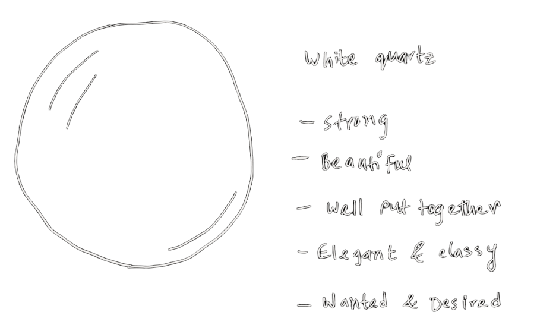
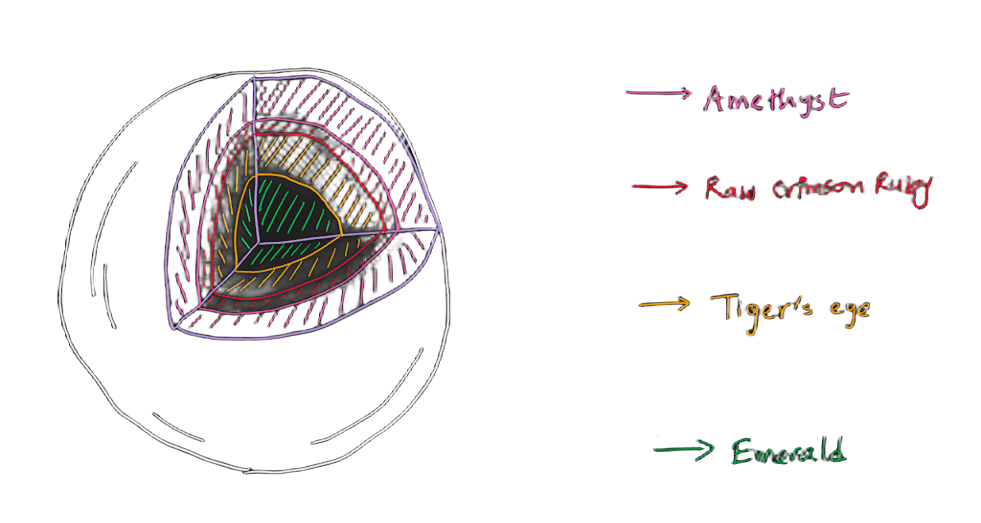
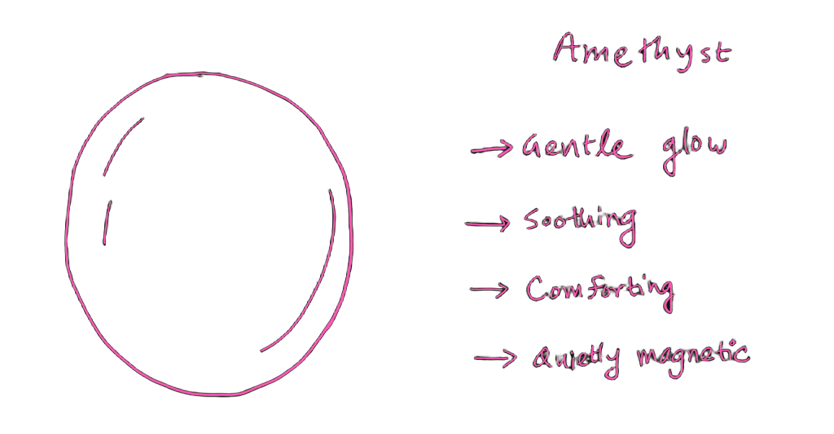
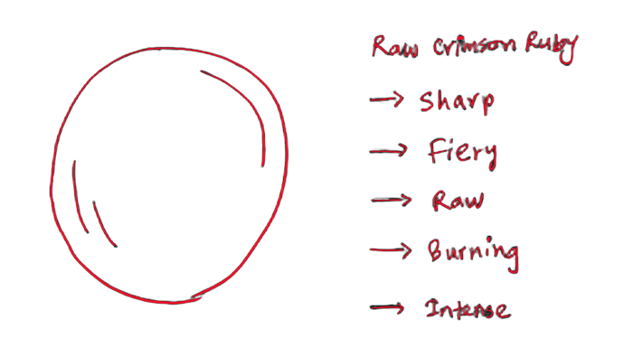
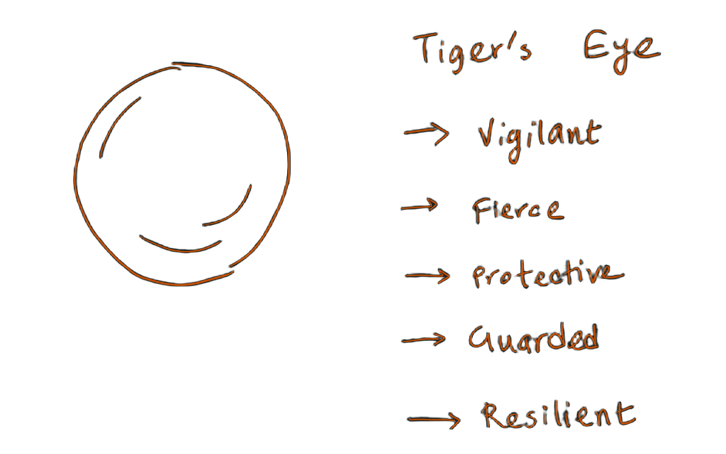
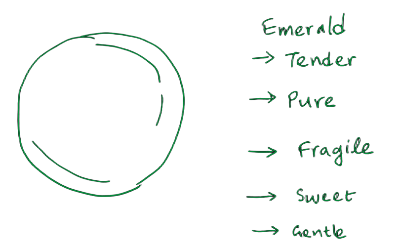
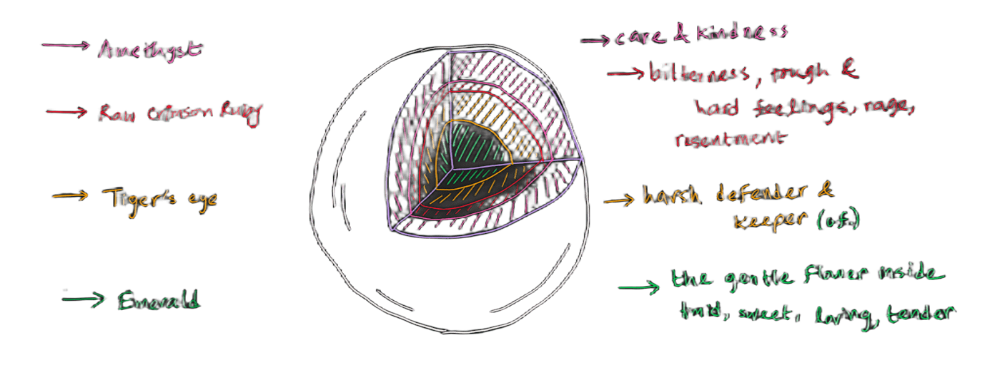

Legend says that on certain quiet shores at sunset, the sea washes up rare, hidden artifacts...
This evening, it brought two things: a strange, smooth sphere... and a message sealed inside a bottle.
To whoever holds this artifact:
At first glance, it appears to be nothing more than a flawless piece of White Quartz... smooth, unbreakable, and perfectly put together.
Inspect closely...

Cut inside...
and there's much more...

The weird stone is...
layered?
But why are there so many layers in this weird stone?
and what do these layers even mean?
the scroll reads...

It continues..

Why are they
like this?

Why write all this?
what's the meaning?

The scroll is almost at
the end
the weird descriptions
of the stones have
stopped
there is written a small
text at the end.
It writes –
Do stones... have feelings?
No... stones do not. That would be awkward
Stones do not carry the quiet weight of the world
on their shoulders
They do not hide their softest moments behind
hardened walls, nor do they burn with raw fire
when hurt
Stones do not love with a tenderness so deep
that it needs to be
protected
This isn't the story of a stone
It never was
This is the map of YOU. Every layer, every shield,
and the rare,
beautiful heart I am so lucky
to know
What?
So...
the white quartz was
the weight
the tiger's eye was the
shield
the red ruby is the
fire
and the emerald being the
tender heart I love
so much?

Stupid scroll, really
the stone's kinda cool though